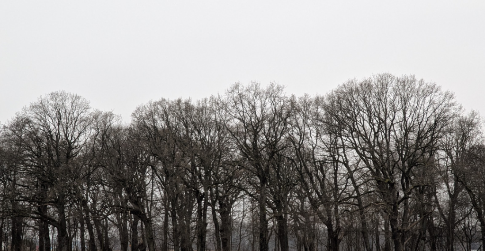

När skånevintern biter och det känns som om det tar lika lång tid att göra sig redo för att gå ut som tiden man faktiskt spenderar ute, är en årslista inte så dum att ha. Jag har fått ta mina tjockaste handskar. Med vinden känns minusgraderna dubbla. Typisk skånevinter.
Det pågår inventering av övervintrande sångsvanar i hela Sverige, i regi av BirdLife Sverige. Det var en bra anledning att åka ner mot Tomarps kungsgård.
Några mindre flockar sångsvan håller oftast till på fälten, och idag var inget undantag. Svanarna lyser vita mot de grönbruna fälten. Jag räknar som vanligt, antalet gamla först, följt av de unga. 0-1, 1-1 … 8-3 … … 22-4. Det sitter i ryggmärgen efter alla år av rastfågelräkningar, gäss, änder och svanar i hundratal.
I övrigt är det tomt. Ibland kan det finnas stora mängder gäss här, men idag är fyra ensamma kanadagäss allt jag ser i gåsväg.
Det drar en kall vind över Kungsgårdsmaderna. I hela Tomarps Ene hör jag endast en enda fågel, en nötväcka som ropar från en av de höga ekarna. Nötväckan brukar vara ljudlig, men även den verkar ha svårt att få kroppen att fungera fullt ut i kylan.
En ensam storskarv passerar över maderna. En mindre flock sångsvanar följer efter, på väg mot Kvidinge.
Jägarna ute på fälten rör sig neråt maderna. Dags att bege sig hemåt.
Senare under dagen stöter jag på ytterligare några arter. Först en kniphona i ån vid bron mot Klippan. Hemmavid en blåmes, samtidigt som en sparvhök patrullerade lågt över trädgårdarna.

Fågelåret i Åstorp, 21/150